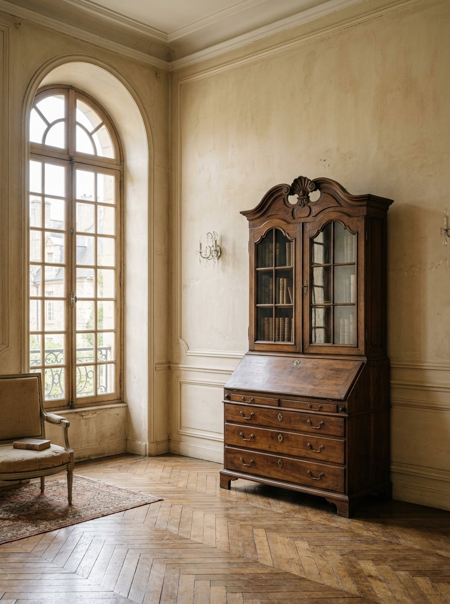
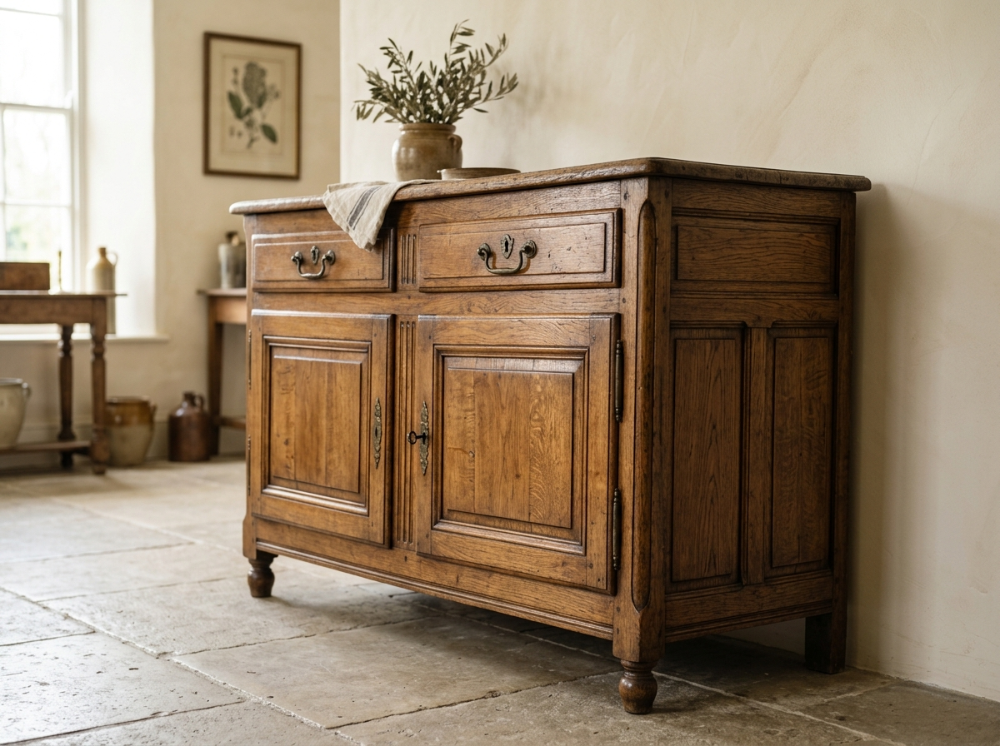
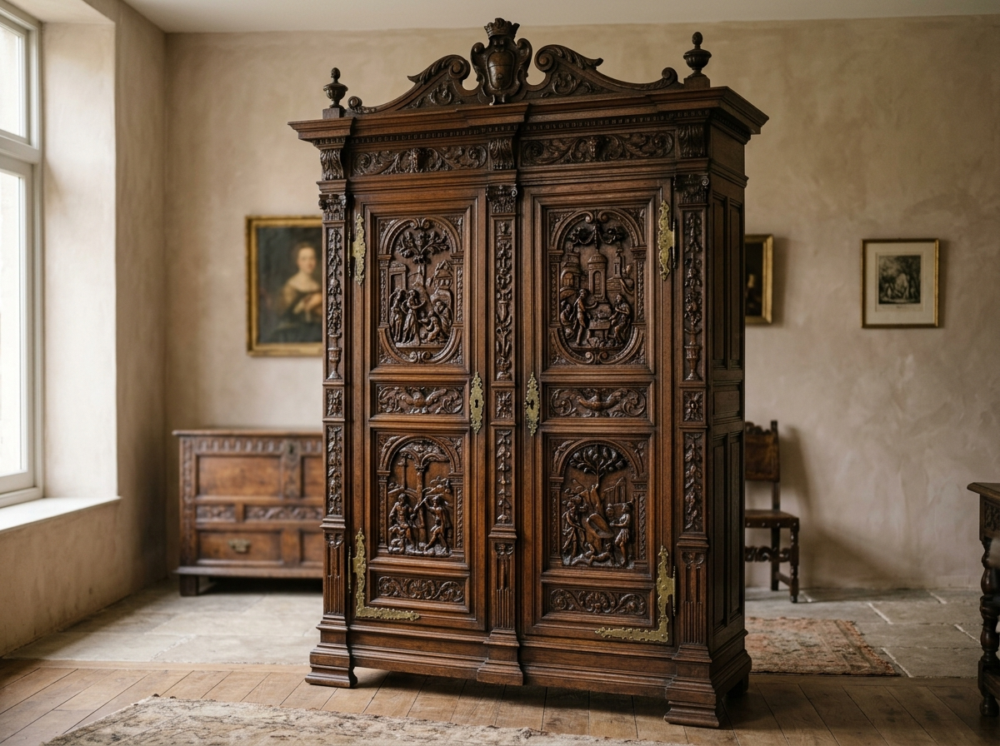

A Reverence for What Endures.
Maison Relique was born from a fundamental belief: a home is only as soulful as the objects it shelters, and true craftsmanship never becomes obsolete.
In an era dominated by rapid consumption and synthetic materials, we dedicate our practice to discovering, authenticating, and preserving historic furniture pieces that possess architectural proportion, noble natural timbers, and genuine human character.
Every bureau, refectory table, and bergère chair in our gallery has witnessed centuries of human rituals. Our role is not merely as collectors, but as custodians who bridge the past into modern living.
Four Principles That Define Every Piece.
Before any antique enters our collection, it undergoes rigorous inspection across four uncompromising benchmarks of authentic furniture art.
Proportion & Architectural Balance
We look for pieces with timeless symmetry and stately volume that command presence without cluttering interior spatial flow.
Authentic Joinery & Construction
Hand-cut dovetails, pinned mortise-and-tenon joints, and solid timber linings that demonstrate master woodworking.
Honest Material Integrity
Slow-grown European walnut, quartersawn oak, sand-cast brass hardware, and vegetable-tanned hides that deepen with age.
Enduring Structural Presence
Pieces that have survived generations with structural soundess, retaining the dignity to serve another century of daily life.

Human Hands, Timeless Artistry.
Long before automated machinery and disposable assembly, furniture was created by guild artisans who understood timber as a living, expressive medium.
Every curve of a cabriole leg, every micro-variation in hand-planed tabletops, and every hand-rubbed coat of shellac reflects countless hours of focused dedication. We work directly with master conservators who uphold these centuries-old woodworking disciplines.
A Five-Stage Provenance & Care Journey.
Every acquisition follows an uncompromising pathway from discovery in European estates to private gallery presentation.

Discovered
Sourced directly from historic private estates, manor sales, and verified European heritage auctions.
Examined
Inspected millimeter by millimeter for timber authenticity, period hardware, and structural stability.
Understood
Historical research documents the maker, artistic era, stylistic motifs, and provenance archive.
Prepared
Reversible conservation, gentle cleaning, and organic beeswax nourishing by master restorers.
Presented
Installed in our unhurried gallery space, ready for private viewing and residential placement.

Patina Is the Proof of Life.
We reject sterile perfection. True elegance lies in the subtle wear, softened corners, and deep tonal luster earned across generations of daily use.
Where modern items degrade, authentic solid woods deepen. The gentle sun-fading on a walnut commode or the natural burnish on an oak tabletop are honest signatures of time that cannot be manufactured or rushed.

Curated for Distinctive Interiors.
Our catalog is intentionally small and meticulously curated. We acquire only pieces that merit a permanent place in fine architecture.
Uncompromising Selectivity
Only one in fifty evaluated pieces meets our exacting standards of character, condition, and aesthetic harmony.
Documented Provenance
Each piece includes complete archival documentation detailing stylistic lineage, estimated era, and timber origin.
Architectural Presence
Forms chosen specifically for their ability to anchor contemporary rooms and elevate historical properties.
Enduring Value
Physical heirlooms that retain their beauty, function, and intrinsic worth through generations of stewardship.
Objects That Continue to Tell Stories.
When you bring a Maison Relique piece into your home, you become part of an ongoing narrative — adding your own memories to an artifact that will outlive us all.
We invite you to explore our current collection or visit our gallery atelier for an unhurried, private conversation with our curators.
